WORK・品牌識別
孵咖啡洋館為主打日治昭和懷舊氛圍的咖啡館二店，重新委託品牌識別設計。以傳統家紋「木瓜紋」為靈感發展孵鳥紋圖騰，並設計專屬的「孵島昭和體」標準字，建立一套具有復古質感、可延伸應用於招牌與周邊物件的品牌識別系統。
專案對象
孵咖啡洋館
專案時間
2019
專案類型
品牌識別
負責內容
視覺設計
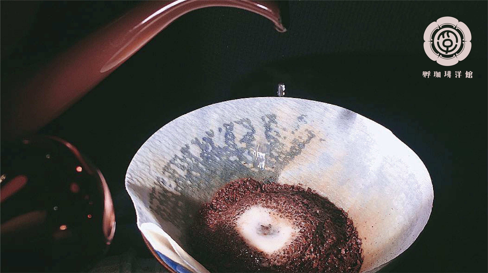
品牌識別以低調的方式融入手沖咖啡情境，延續孵咖啡洋館沉靜而具年代感的氛圍。
本專案重點
孵咖啡洋館是一間承襲昭和洋館氛圍的咖啡館，二店重新委託設計品牌識別。我以傳統家紋「木瓜紋」為靈感發展主圖騰，並揉合「孵」字古字寫法與鳥類意象，設計出兼具家紋秩序感與品牌辨識度的孵鳥紋樣。
字體部分，我參考昭和年代的招牌與書籍字體，設計了一套專屬的中文標準字「孵島昭和體」，並針對筆畫比例、裝飾細節逐字調整；色彩則選用具有仿古質感的傳統色「瑠璃紺」作為主色，最終建立出一套涵蓋直式、橫式、單色與反白等多種組合方式的識別系統，供招牌、包裝、周邊物件等情境延伸使用。
設計發想－木瓜紋與孵鳥意象
品牌圖騰發想源自日本傳統家紋「木瓜紋」，取其瓜瓣輪切的圖形結構，並融入「孵」字古字寫法與鳥類意象，發展出兼具吉祥寓意與品牌識別性的孵鳥紋。設計過程中比較了瓜輪、孵之古字、孵鳥紋三種圖形演化階段，確認最終能同時保留家紋秩序與品牌辨識度的版本。
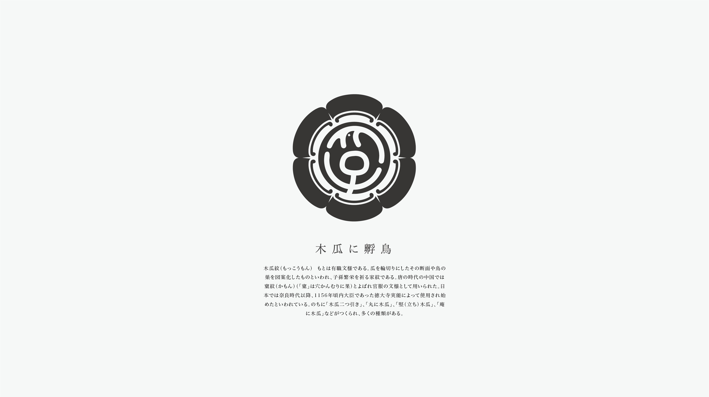
木瓜紋源自有職文樣，取瓜輪切面與鳥巢意象，是象徵子孫繁榮的傳統家紋。
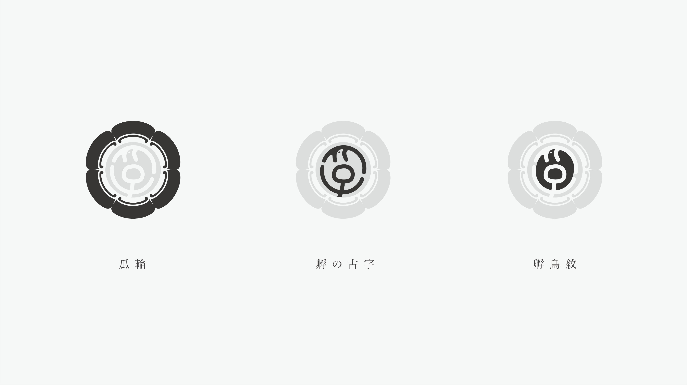
圖騰演化過程：從瓜輪、孵之古字到最終定案的孵鳥紋。
字體設計研究與專屬字型命名
為呼應洋館復古氛圍，字體設計參考了昭和年代常見的招牌、書籍與商標字體，取其筆畫粗獷、裝飾性強的特徵；並依此發展出一套專屬中文字體，命名為「孵島昭和體」，作為品牌標準字的核心。
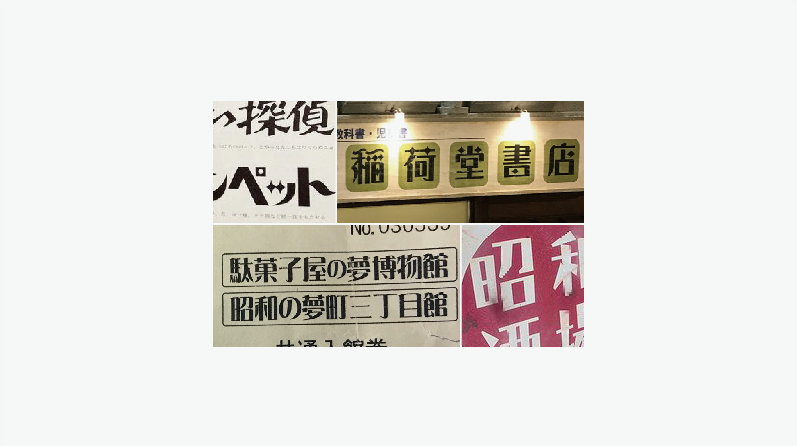
蒐集昭和年代招牌、書籍與商標字體作為字型設計參考。
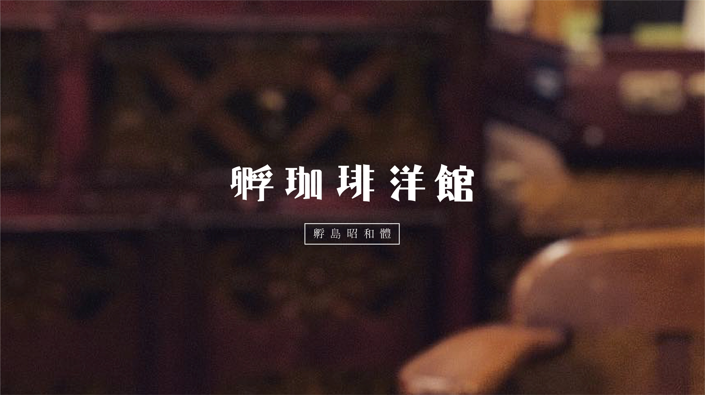
專屬品牌字體「孵島昭和體」，呼應洋館懷舊氛圍。
筆畫細節與文字調整
標準字定案前，針對字距、字重與筆畫比例進行多輪調整，讓「孵珈琲洋館」四字在視覺重量上更為一致；同時保留裝飾性筆畫細節，例如水平與垂直的比率變化、裝飾菱形與圓弧收筆，強化字體的手作與年代感。
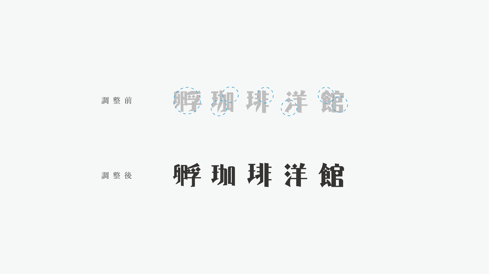
標準字調整前後對照：字距與筆畫重量經過多輪微調。
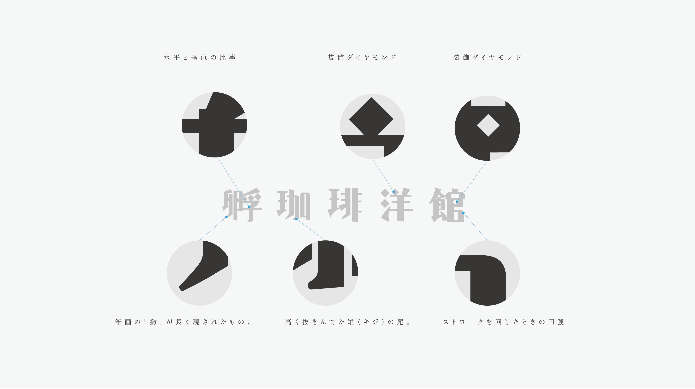
標準字筆畫細節設計，包含水平垂直比率、裝飾菱形與圓弧收筆等細節。
色彩系統－瑠璃紺
主色選用日本傳統色「瑠璃紺」，是一種帶紫調的深藍，常見於佛教經典與江戶時期服飾染色，能呼應洋館的復古質感；標準色與孵鳥紋圖騰、標準字搭配後，構成品牌識別的核心視覺語彙。
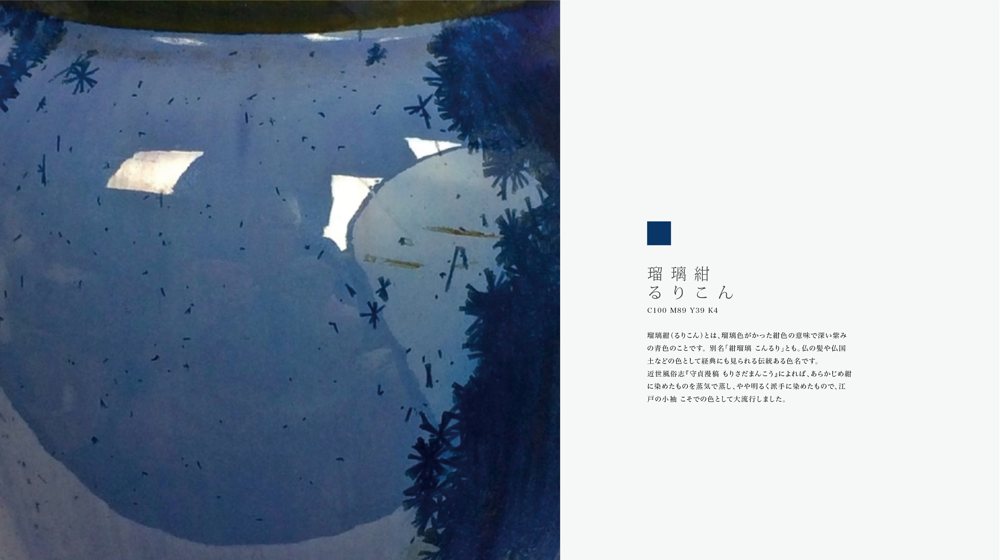
主色「瑠璃紺」取自日本傳統色名，帶有深紫調的靛藍色。
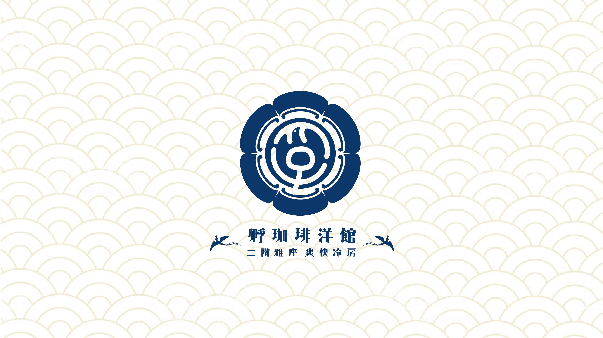
孵鳥紋圖騰、標準字與主色瑠璃紺的組合呈現。
標準組合與延伸應用
為因應招牌、菜單、包裝等不同尺寸與版面需求，設計了直式、橫式、單色圖騰與反白等多種標準組合方式，並統一以深藍與米白兩種底色作為主要應用配色，確保品牌識別在各種應用情境下維持一致性。
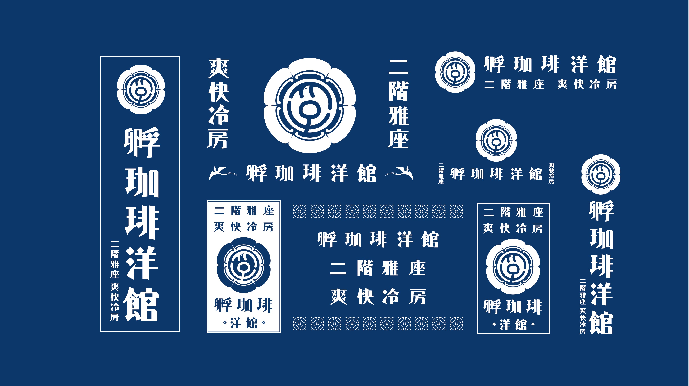
深色底標準組合，涵蓋直式、橫式與單色圖騰等多種版型。
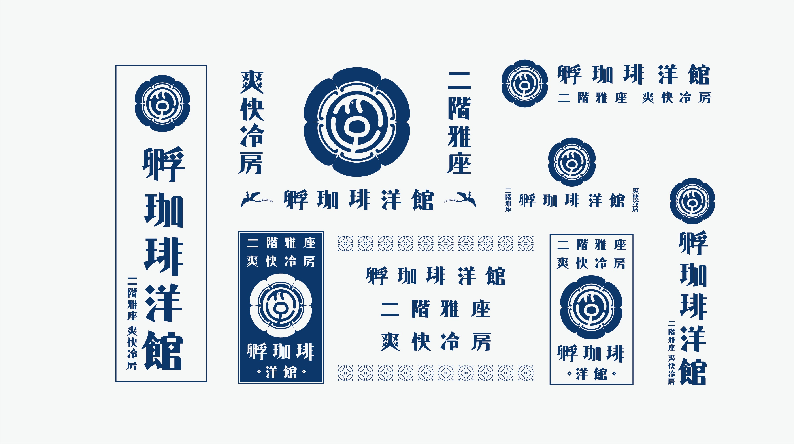
淺色底標準組合，作為深色版本的反轉應用。
應用情境呈現
品牌識別最終應用於咖啡沖煮情境與周邊物件，標準字與圖騰以低調的方式融入畫面，延續孵咖啡洋館沉靜而具年代感的品牌氛圍。
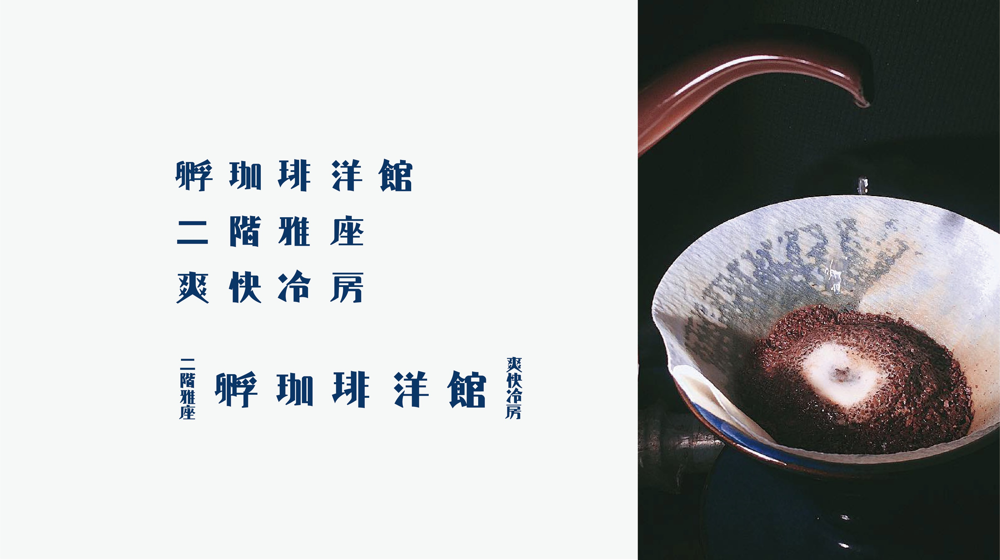
標準字與圖騰組合示意，搭配沖煮咖啡的情境畫面。
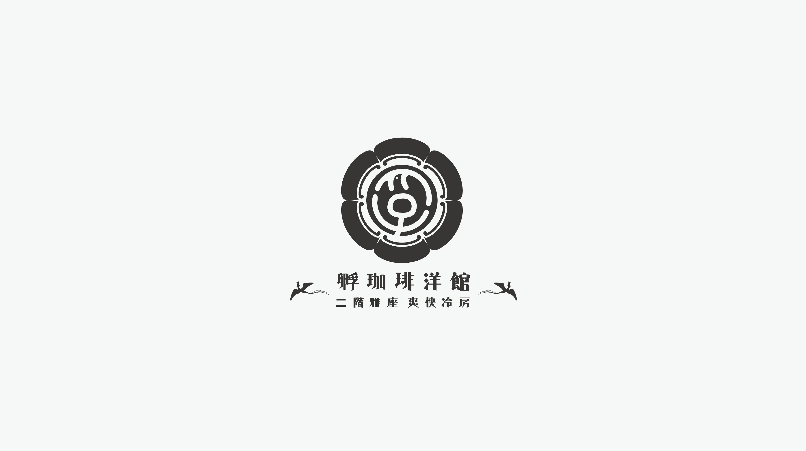
孵鳥紋圖騰的乾淨版型呈現。